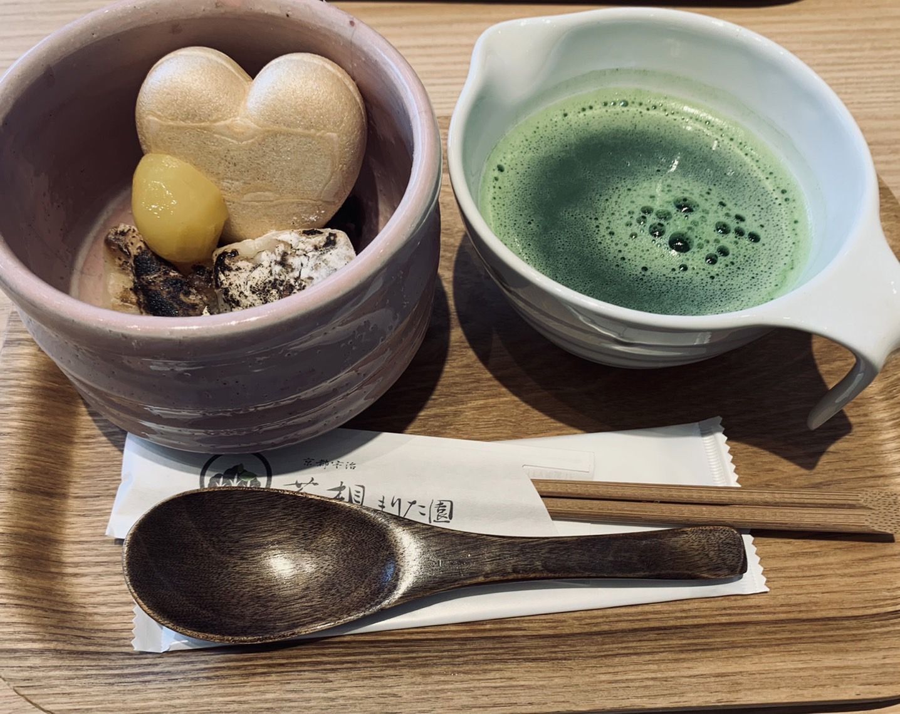

抹茶の雅なる香り - 伝統と美を楽しむ抹茶和菓子特集 -
抹茶の粋と優雅さが織りなす、和の心を感じる抹茶和菓子の世界へようこそ！
1.京都宇治 茶想もりた園 RAYARD Hisaya-odori Park
「京都宇治 茶想もりた園」は全国茶審査技術競技大会や、京都府茶審査技術競技大会などにおいて何度も優勝している日本一の茶師である森田治秀さんが監修した「本格和カフェ」です。落ち着いた雰囲気の店内で、最高級の抹茶を使用したスイーツやお食事をいただくことができます。特に抹茶ぜんざいはハート形のもなかが入ったかわいい一品でオススメです。